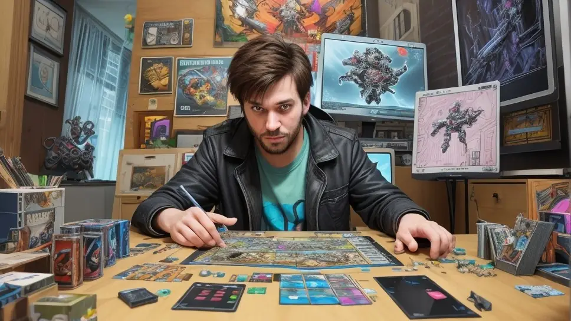
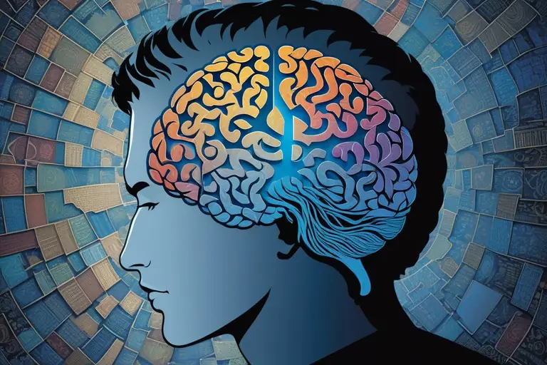
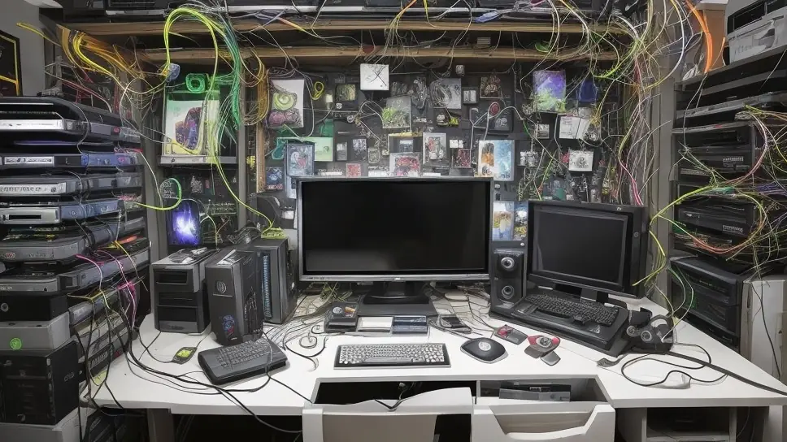
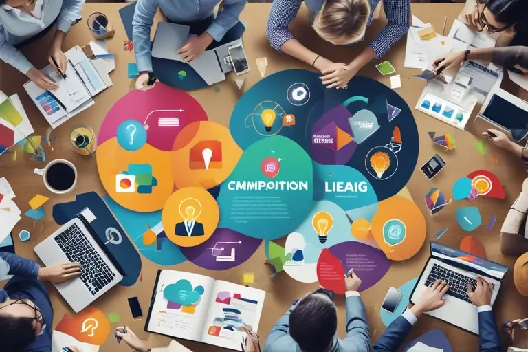
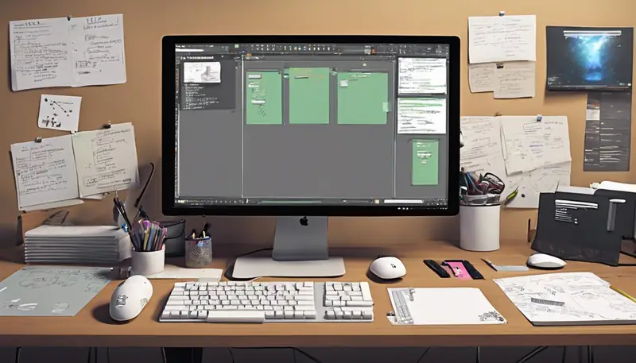
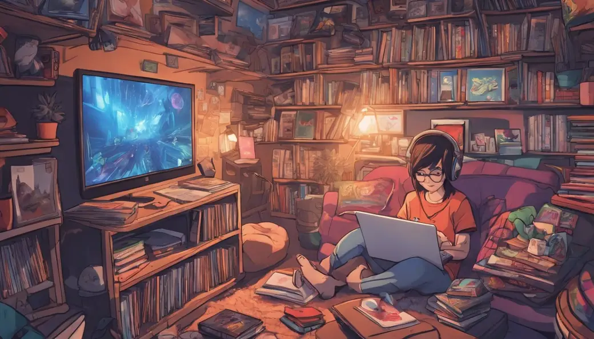
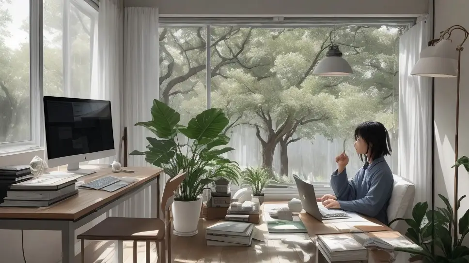
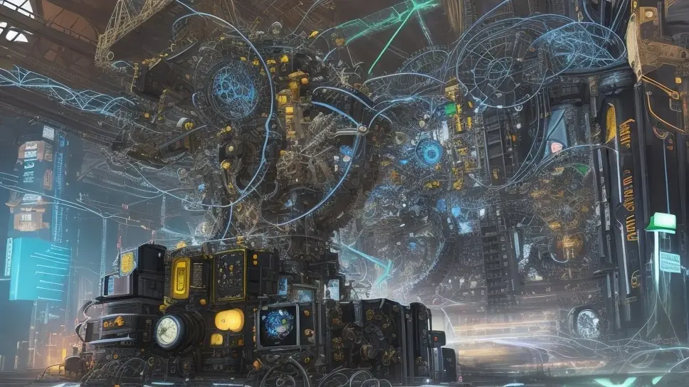

What a Game Designer truly is

A game designer is responsible for conceptualizing, designing, and creating the overall blueprint of a video game, tabletop game or a live-event game, defining the complete experience that both the game developer and the player will have from start to end.
A game developer and game designer are not the same.
A game developer is someone that works with art, code, sound and writing to build a playable game, but they don’t have the instructions on how to put it all together because that's what a game designer does.
A game designer is someone who knows how to glue the things a developer works on together so that they’re not worthless as a whole. There are also marketers, community managers and publishers that are also part of that glue. Both developer and designer need each other like lovers; can’t make a baby with only one person.
Essentially the game designer is like a spider that connects everyone with an interconnected web and instructs them *what* to do, while trusting that others will know *how* to do it. Sort of like a director, leader, mastermind, facilitator, recipe maker, architect.
This means having input in the stuff that happens early on even before a player gets to play the game, even influencing things that are technically "outside the game" itself like the marketing, monetization, social community design, publishing and the construction stages of the entire project from how it begins and how it is continued to be built towards its ultimate form.
"Within the game" itself, a game designer will define the abstract rules, structures, frameworks, architecture, systems, features, mechanics and all the elements that are related to them.
These are things that are designed holistically - as a whole - and designed with the entire lifecycle of the game project in mind, starting way before even the early playable version exists and all the way into the far future where the game itself has been completed but is henceforth maintained, kept alive and compatible with future platform and operating system changes. Essentially the entire lifecycle is the responsibility of the game designer.
Game designers do not code, do not script, do not draw, do not market, do not compose audio or music. They collaborate with other team members such as artists, programmers, marketers, community managers, publishers, composers and writers that do these things. Game designers do however study a little bit into each of these mentioned skills, enough to gain empathy to understand what it's like to be in the shoes of the people they’re working with.
A game designer communicates with them and provides those people with clear blueprints and instructions on what they need to achieve. They're a visionary, a director, a project manager and a facilitator, trying to work with what they have and adjust/adapt to the conditions and resources that are available to them.
Game designers don't necessarily design the final content that appears in the game, but rather design the support structure for how content in the game works, how it's made and how it's managed inside and outside the game. Basically the game designer does the complicated boring foundations stuff, while the rest of the team gets to do the fun stuff of making the final content according to their tastes, but limited within the framework that the game designer created for them.
Essentially a game designer is a mastermind trying to figure out a very complex puzzle and how to put it all together using many different fields of knowledge to create something that is worth coding, worth drawing, worth writing for, worth marketing and worth existing.
Solo-developer caveat
Game design is already its own skill set, a big job in itself that is both difficult and complex. It's as demanding as coding, art, sound, music, writing, marketing, publishing or community management.
In many game studios, often because the work of a game designer is abstract and invisible, manifesting only through code or art in a tangible way, it ends up being undervalued and therefore dumped onto the shoulders of a coder or an artist, essentially forcing them to perform two heavy jobs alone. The result is either burnout, slow development pace, degrading or half-assing one or both of these jobs.
If you are developing a game alone, you essentially take on many jobs all by yourself which requires you to work smart if you want to create something worthwhile at alteast somehow sensible pace and without burning yourself out.
The good news is that you don't have the burden of having to communicate with anyone which can be draining, slow, annoying and difficult at times.
The bad news is that you do not have the resources and skills of another person to help you out.
To survive this, your goal is to work smart; incorporate design thinking into how you work and how to come up with a plan to create a project that is feasible for a single person to complete. Use any means necessary that help you skip creating things in a slow painstaking way in favor of faster options, whether that be writing, art, sounds, code, marketing, community management or publishing.
Do not try to compete with making expensive, high fidelity, complex, laborious and ultra detailed custom made assets like ones done by large studios if you can't afford to make them yourself.
Don't code intricate systems if developing them would take too long and be difficult to deal with and hard to maintain/expand in the long run.
Use shortcuts, asset packs, generators, free or paid services, simple solutions, hacks, automation, AI and anything else that lets you get your game built faster into a fully playable state.
The beauty of well done game design is that it is possible to create compelling products and services with surprisingly simple and cheap solutions that make more expensive solutions not any better than yours in the end.
It *is* possible to make something amazing alone, though with the caveat that you’re technically still relying on other people’s existing services and products even if you’ve never met them or interacted with the person behind those services and products. Such is the wonder of the digital age.
How to become a master game designer
You'll need a lot of things - various knowledges, a library of personal experiences and being patient.
Human & Project Purpose Knowledge

Understanding human beings and human psychology. You don't have to become a doctor or psychologist, but you will need enough to understand the way the human mind works, in general.
“Project Purpose” refers to fundamental human needs; why do humans play video games, why do they make them and how to figure out what is the purpose of your project so that you know how to design it to maximize the fulfillment of that purpose via your project. The first article I released on my blog explained this topic in detail, titled “Games Are Need Satisfiers”.
Personally, I think the best resource for both of these is Nonviolent Communication by Marshall Rosenberg. It alone gives you a powerful foundation to see the world and people in a way that makes it much easier to have empathy for people and therefore have the insight of how to contextualize every single design decision you make for your game project. You can get everything needed through audio and video materials here:
!Better Human - Nonviolent Communication
!Better Human - Nonviolent Communication
The other half of this is to observe people. You can do this by watching people around you, study them, be curious and ponder why they did something or said something, question them, don't immediately believe them. This can be done both in real life, but also from the comfort of your home by watching streamers, youtubers, podcasts, reading books, listening to audiobooks, watching movies, watching documentaries, watching cartoons and anime, playing character driven video games and just consume any other media that is either real time or recorded in the past.
Eventually this will build up enough experience in empathy and understanding others on a deeper level as you sort of "stalk" people online and offline trying to learn more about them. Not in the creepy way, but in a curious way to understand why they are the way they are, why did they do something and what is their story that made them become what they are today.
You can also have conversations or read existing conversations online in forums, message boards, chat channels, social media accounts and such. Often something said online are things you'll never see a person say in real life and vice versa. Some of these nuggets of information may be closer to truth and genuine than anything else you'll find, but sometimes they may be ignorant fake information or intentional trolling or malicious behavior. Learning to detect these can be massively helpful too.
Be aware that the following are real in our world: International spies/saboteurs/agents/thugs, PsyOps (Psychological Operations conducted by dangerous enemy governments to destroy your country and people as part of their methods of unrestricted warfare), scammers, paid corporate marketers/employees/harassers masked as regular users trying to trick people to change opinions using underhanded means, jerks, morons and people that have become evil and harmful.
They may be visiting the same places as you are (online) and don’t look that much out of the ordinary either, blending easily with the rest. Some information you’ll run into may be carefully crafted to fool you or the people around you with horrible intent. Stay safe out there and be vigilant. Reading about narcissistic abuse, bully behavior, bad leadership stories and logical fallacies can help you safeguard against these.
I mention this because it can be useful when dealing with difficult people, especially angry vocal fans, hate mobs, harsh reviews that are written or spoken in a way that look like personal attacks and try to make you think there is something wrong with you. NVC and the above information gives you a mental shield to stay true to yourself and protect against such violent behavior from others. Just know their words are often more about descriptions of themselves than they are about you or your actions.
Technological, Physiological & Material Knowledge

Video games, board games or real life activity based games are all based on the constraints of their "platform" or "environment".
In real life, you have to acknowledge that humans have limited stamina and are quite fragile so you need to take things into account to create live-event games that respect these things. It's also worth learning a bit about the limits of how human hands work, how eyes work, how hearing works, and how general physiology of a human works. If you’re figuring out how to design the controls or visuals of your game, this knowledge can make a big difference in how comfortable and sustainable it is to play your game, regardless what type of game it is, be it in real life or virtual that is played through a machine interface.
In board games, you do not have the benefit of computers managing information, running entire simulation nor automating calculations. You need to study and learn the limitations and benefits of board games to craft better board games or other tabletop games.
In video games, you need to consider that computers have limitations too, be it disk space, computational power, memory or other hardware or software side quirks that can ruin your day if you try to ignore them. You need to learn about the machines (computers, smartphones, consoles, etc) and the software on these machines that would run your games or possibly affect your games.
You'll need to find out what is possible, what is impossible and what are hidden caveats that could seriously change how you'll need to approach your project.
Again, you don't have to become an engineer, programmer or technician, but you have to understand the platform, interface or environment you're working with. This means studying the game engine, Software Development Kit (SDK), Application Programming Interface (API), Integrated Development Environment (IDE) that you'll be working with and relying on to create your project. It also means studying existing games to see how they behave and where they fail technically.
Some basic information about the machine you're working with and its operating system may also be useful, whether that’s a Virtual Reality Headset, a Personal Computer, a Gaming Console, a Smartphone, Tabletop supplies or Live-event materials for games played in IRL(In Real Life) spaces, or anything else of this type.
For live-event games or tabletop games you may notice some materials are better than others in terms of durability, cost, flexibility and manufacturing, so figuring these elements out to create the physical pieces to play your IRL space games safely and sustainably is also relevant to know.
Communication & Business Knowledge

If you're working with other people or marketing to players, you'll need to learn how to communicate with them. In regards to teamwork, community management and marketing, Nonviolent Communication by itself will already be tremendously helpful.
To supplement it, I recommend looking up people that specifically talk about business development, marketing or project organization to see how they do things - hopefully within the same sphere as your game engine is or at least within the sphere of game development.
This can be achieved by listening to podcasts or watching content creators or video interviews online. There's a lot of good information out there if you search hard enough.
If you can't find any within those spheres it's ok to look for it in unconventional places too, though you'll have to do more thinking on how to adapt it to your purposes. As an example, Nonviolent Communication isn’t directly related or tailored to game design, but as you study it you’ll notice how universally applicable the information given in it is; adapting it to game development will become rapidly evident after you understand the gist of its mechanics, tools, mindset and processes.
Personally I'd give a shout out to Tad Hargrave from Marketing For Hippies. He teaches how to do marketing and business in a way that doesn't feel cringe or doesn’t make you hate yourself. Most of his content is free on his youtube channel and covers almost everything possible. He also isn’t directly in the games industry sphere, but again his information is so universally applicable that it’ll be easy to notice how to adapt it to your business and marketing strategies once you learn what he has to tell you.
Business and marketing is tremendously necessary regardless if you intend to make money or not. Being able to reach people, share your creations in a way that gets noticed and understood correctly is a big part of attaining success. Neglecting neither will result in your hard work being unnoticed or misunderstood, while failing to set up the business infrastructure around your project will make it difficult or even impossible for you to receive feedback, visibility, traffic and payments.
If you want to work in a company, business knowledge is a must since most business live or die based on the income they produce and if you don’t know how to make the game create revenue or some other form of value, then you might end up being a useless person in the company and get fired for it.
The practice of monetizing a game is also a central responsibility of the game designer, not the marketer, nor the publisher and no one else. This is because the game itself can be woven and designed to serve specific styles of monetization and revenue creation. As a game designer you can look at the game you’re building and see opportunities in what kind of solution for making money, attracting visibility and what type of service or product model is the best option for that particular project.
Ideally you should find a method to first offer something free yet valuable to draw people in and then offer something more and advanced for those that pay money or offer their time or other resources to support your project or access something more beyond the free stuff.
Just as a word of warning, a lot of monetization information offered online can be horrendous, predatory, unethical and just plain abusive. If you start to see your customers as something else than living breathing innocent human beings deserving of human rights, care, support and respect, then you’ve taken a wrong turn somewhere. Never go down that road.
Conveying information through words isn’t the only thing, but being able to create documents that are formatted in a way that are easy to read, straight to the point, illustrate concepts that are better shown through a picture, diagram, chart or an infographic and other such elements are also a form of communication between people, whether its customers or people you work with.
Project Organizing Knowledge

Even if it's a personal project and you're simply making the game for yourself, you'll need to learn how to communicate with your future self too. Staying organized will become important the faster and more efficient you want to be with your projects. Organization also helps you communicate with your team members when you know and they know where the information is located and how to browse it.
The annoying caveat here is that I can't recommend one-size fits all solutions to learn the basics of staying organized. Every platform, every project and every team may require different methods of staying organized, so the way your files, notes, reference materials and other things may have to be organized in a way that suits the particular project you're currently making.
The only general advice I can give is to record any ideas as soon as they come because you'll forget them and sometimes never get them back. Make sure you have multiple backups that are often updated so that no completed work is lost by accident. Try to keep all materials of the project in one place as best as you can, though ensure that backups of this one place are in as many different places as possible to ensure maximum redundancy and safety.
To give you an idea of how staying organized can be a challenge, your game design may be a collection of multiple different text documents, photos, scans, physical objects, folders of reference images in various formats, video clips, pdf files and even full programs. Each project may only need some of these and in different ways so staying organized is often a custom puzzle that you need a tailored solution to suit that project the best way.
Again, reading articles online whenever you need help staying organized is a great start. These can be found easily with a web search (google or similar) by typing in “how can I stay organized with my project?”.
As an extra tip, learning how to use a web search engine can be a great help in finding the information you need. Just type in “how to use a web search engine” into www.google.com and it will give you lots of links to click on and learn from.
A Library Of Personal Experiences

Another name for this would be "Game Knowledge", but it's not something that can be easily learned by reading a book or even being taught. Instead, it's about subjecting yourself to trying many different games, animes, cartoons, movies, videos, events and asking these questions while or after you see/try/experience them:
- What mechanics do they have?
- What features do they have?
- What systems do they have?
- What kind of context, theme or purpose do they have?
- What kinds of content do they have?
- How does it feel to play this game in the short term and the long term?
- Pondering what is the potential of this game or is it a dead end?
- Is it good or bad? Why is it good or bad?
- If you could change something about it, what would that be?
Basically, go explore and try anything and everything made by others that catches your interest. Be inspired by them, disappointed by them, be curious about how they work and how they were made. Analyze them for yourself.
All this knowledge will gradually accumulate into a personal "library of experiences'' that will live within you. It will develop into your intuition where you'll be able to come up with unique ideas and advanced designs - rapidly and with great diversity - seemingly by magic where others will stumble to see the opportunities that you can see clear as day.
It is like a giant mental toolbox during game design work from where you can borrow/pull/copy ideas from, combining them in new ways, remixing them into new configurations and replicating them but in a new setting.
If an idea is good, steal it and give it new life. All art is the result of a remix of existing things, there is no such thing as pure originality and honestly people mostly want things that are relatable anyway.
The difference between a thief and an artist is that a thief only steals from one place and doesn't evolve the work in any way, doesn’t put effort or remarkable modifications to it when presenting it, while an artist may end up stealing from hundreds of sources, combining them skillfully in a way that results in something that transcends anything that was created before it.
Patience

I sometimes consider the entire nature of game development to be similar to building a space satellite; you're creating something that is rather fragile and any small mistake can become very costly down the line or ruin the future of the project entirely. Once it's launched, it's often easier to make a new satellite than try to bring the existing one down for overhauls. It's also rather expensive and slow to build a satellite as it is to build a video game in some respects.
Because of this, depending on how large and serious the project is, it may be important to be careful/methodical in your approach, test your theories, simulate them in your mind or run experiments in a safe test environment first.
If you have enough of a large and wide Library of Personal Experiences already, you may be able to predict if something will work or fail without even needing to test it.
If you're not sure, you may need to do whatever you need to to manifest the idea you have in mind to see it as a prototype if it has potential or if it's a bad guess. This could be done with pen paper, paper and scissors, throwaway code prototypes or using physical objects or toys in real life to imagine something that would happen in the computer program, live event game or a tabletop experience.
But above all, the annoying thing about game design is that nothing is automatic in the building process of making a design - you'll find yourself having to slow down and address things that you may take for granted or have to deal with things you didn't think you'd need to deal with when making a design.
Game design as a job is full of details that each may end up its own rabbit hole that goes who knows how deep and some of those holes you actually have to travel through because it turns out to be a prerequisite to a system you need in the game to make it work even on a basic level. Patience, endurance, focus and perseverance end up being more important than you can imagine when you dive into the task of building a game project.
It is very easy for days to turn into weeks and weeks into months and months turn into years depending on the project and the elements that surround it - and the whole time you might even be going as fast as you can, working at full efficiency and doing only the necessary. The temptation to cut corners, to become frustrated with how long everything is taking and feel powerless when your mind wants to continue but your body is already tired for the day are just some of the things that are reality for a game designer.
Taking breaks and taking care of your health and wellbeing is as important as the work itself; if you get sick and die the project will fail and all your work will be worthless. Don't let that happen, be healthy and strong.
Eat well, sleep well, drink water, go outside for walks and fresh air, do something fun that gives you exercise (drive a bicycle, row a rubber boat in a lake, play in the snow, chop wood, whatever is fun for you), zone out with movies, games and anime, socialize and chill with other people however you like or just take a moment to do nothing at all once a while.
Are there any shortcuts to this?

I'm afraid this article is the best shortcut you'll get. The other option is to figure out these same things by yourself by brute forcing it.
Schools won't really be able to teach you or give you anything due to how they work and how constrained they are. Diplomas won't really amount to anything and the costs are too high for the education to be worth anything. You'll often get better results by being independent and turning on your own brain, as others are often more interested in your obedience and money than to actually help you become a master at something.
Unfortunately teachers are often encouraged by their environment to get through the work day to keep a low profile and not cause any inconveniences or trouble for the greater machine they're stuck in. And this same pressure that is pushed down from the leadership to the teacher is also pushed down from teacher to the student, who often is vulnerable and defenseless against pushing back against this - often with a real risk of expulsion and losing any legal or social rights in the process if you complain.
The games industry values only completed products and anyone who cannot show a finished impressive creation will be brutally ignored. Diplomas therefore are as good as toilet paper in this field. If you do go to a school, don't go for game design or other abstract fields that aren't well recognized or praised by society; choose something that works directly with code, art, audio, music or servers/technical machines. Learn game design by yourself - this article gives you the necessary instructions to get going.
If you want to make the games you want to make, then start doing whatever you can to build them right now, right here, in whatever reduced form that is feasible at your current stage. The best time to start building your dreams is today, even if it's a tiny step in a day, advancing slowly but surely bit-by-bit every day. Consider a game project as an edible elephant; if you want to eat the elephant, you need to eat it in small pieces over time, you can't do it all at once.
Companies will not allow you to build your dreams; they're often going to pay you to make their dreams and lay you off the moment you're more inconvenient to them than you are useful to them. I wouldn't rely on them unless you have exceptional charisma, ties, nepotism benefits or some other thing that will give you special treatment in the eyes of the leadership of that company.
Beyond that, your survivability as a game designer hinges on how you can be valuable as a standalone unit - in the sense that you can either create entire games yourself or have "another impressive and valuable talent" besides game design that will convince someone to keep you around and pay you well to stay with them.
That "other impressive and valuable talent" would need to be something tangible that creates something physical and easily showable, be it artwork, functional programs or apps or something else a layperson can see and instantly get the point of what it is and be impressed by its merit. It shouldn't be anything like game design itself which deals with complicated abstract information that cannot be easily shown like the other things I mentioned.
I know it's not sensible, fair or just, but that is the unfortunate reality we're stuck in. Game designs are like universal standardizations or electricity; they benefit everyone enormously in so many ways, but they themselves are formless, invisible, intangible. They are the silent glue that makes everything work together like magic, but trying to explain or show it to an ignorant person is nigh impossible without a conduit or a medium of some kind.
Talk about it
Questions, disagreements and ideas of your own are all welcome. Discuss this article with other readers on the Reactorcore Games Discord, follow new articles and dev news on Patreon, or write to me directly.